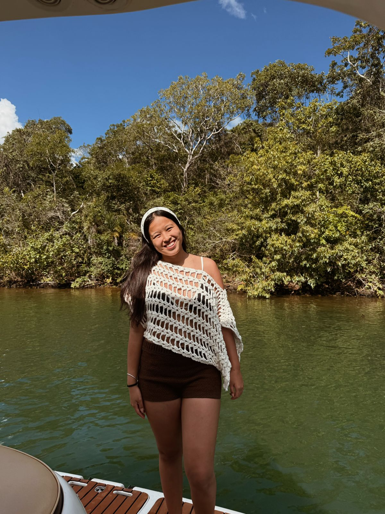

Estudante de veterinária, apaixonada por crochê, leitura e atividade física — e criadora da Kaya Crochet.
Me chamo Alice Ayumi Yamada Kaya, tenho 20 anos e estou cursando medicina veterinária. Entre os estudos, os treinos e a leitura, sempre achei tempo para o crochê — e foi exatamente esse equilíbrio que me ensinou o valor de criar algo com as próprias mãos.
A ideia da Kaya Crochet surgiu de uma vontade muito genuína: transformar um hobbie em uma fonte de renda extra e, ao mesmo tempo, compartilhar algo que me traz alegria e paz.
"Aprendi o básico com minha vó, mas o YouTube foi minha segunda professora. Cada ponto que aprendi se tornou amor em cada peça que faço."
Além da Kaya Crochet, também trabalho na empresa dos meus pais — a Kari-Kari Alimentos — o que me ensinou muito sobre dedicação, organização e o valor de construir algo com propósito.

Da agulha da minha avó até as primeiras peças vendidas — essa é a jornada da Kaya Crochet. Uma história de aprendizado, afeto e muita criatividade.
Entre em ContatoAprendi os pontos básicos do crochê com minha vó — foi ela que me mostrou a magia de transformar um simples fio em algo bonito e útil.
Fui além do básico explorando tutoriais no YouTube. Aprendi novas técnicas, padrões e estilos que expandiram muito o meu repertório criativo.
Comecei a fazer peças para amigos, família e primeiros clientes. Cerca de 50 peças depois, cada uma com sua história e carinho especial.
A loja ganhou nome, Instagram próprio e uma identidade. O sonho de transformar o hobbie em renda extra começou a se tornar realidade.
Atualmente faço peças 100% personalizadas: você escolhe a cor, o tamanho e o estilo que quer. Em breve, terei um catálogo fixo também!
Uso materiais de qualidade selecionados com cuidado, porque a durabilidade e o toque da peça importam tanto quanto a aparência.
Trabalho com prazo real, baseado no tempo de confecção de cada peça. Transparência é parte do meu processo desde o início.